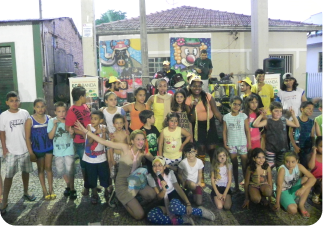

Depois de muitos meses de pesquisa e trabalho em escolas paulistanas os projetos ganharam dimensão social.

O Centro Maria Bernadette é uma Instituição mantida pela Congregação das Irmãs de São José de Chambéry que atende 300 crianças e adolescentes de cortiços e favelas da região da zona norte de São Paulo. Ainda hoje, um de nossos projetos ocorre nesta mesma Instituição.

A primeira equipe de trabalho tinha apenas três pessoas, e a iniciativa dos trabalhos nesta área do lazer educacional partiu da professora de educação física Carla Ravaioli e de Carlos Chinen
Nossa primeira atividade foi uma Festa de Natal para 150 crianças em dezembro na Instituição Colmeia, atualmente titulada de Centro Educacional Ir.Maria Bernadette, localizado na zona norte da cidade de São Paulo. Desde esse dia são realizadas atividades educativas para crianças deste local.